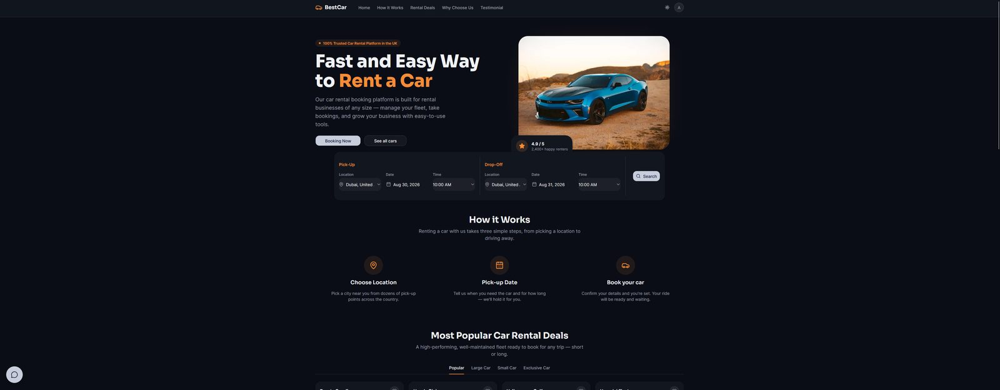
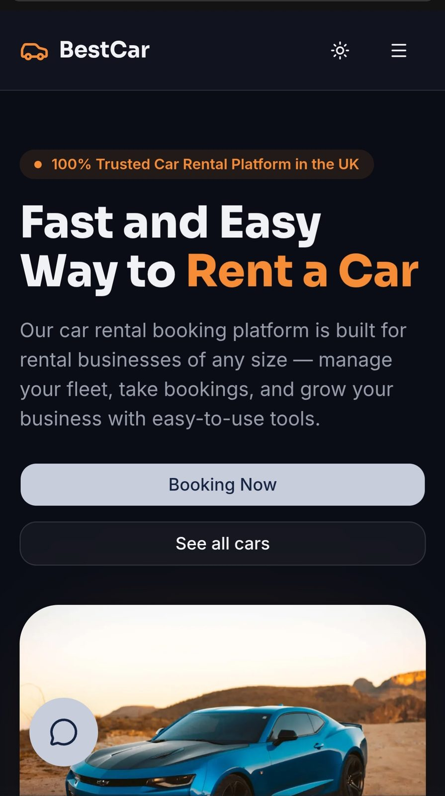
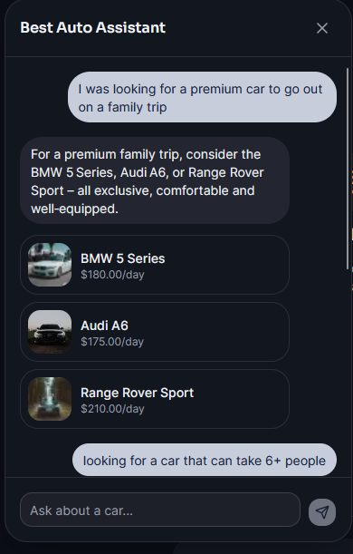
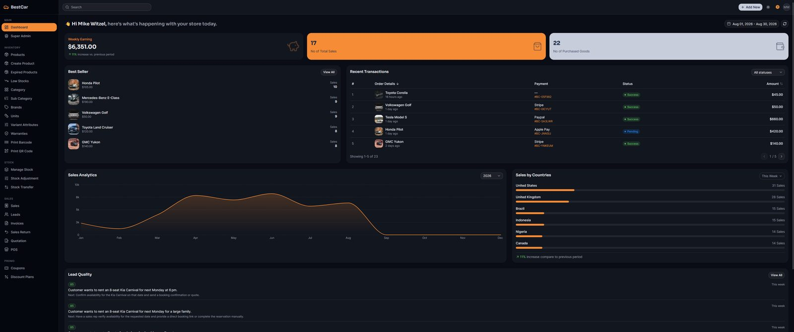
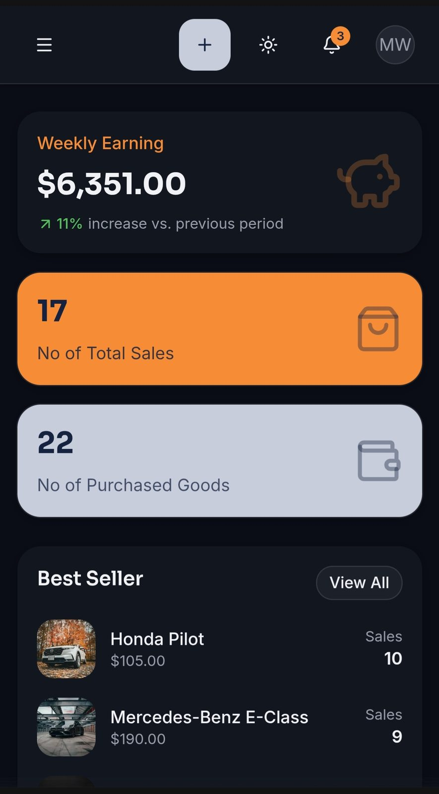
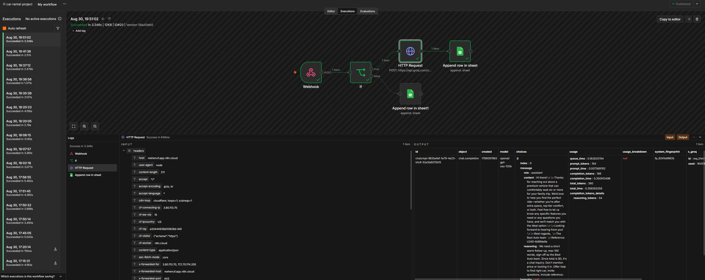
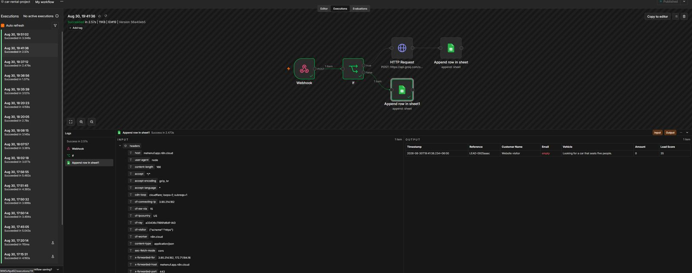
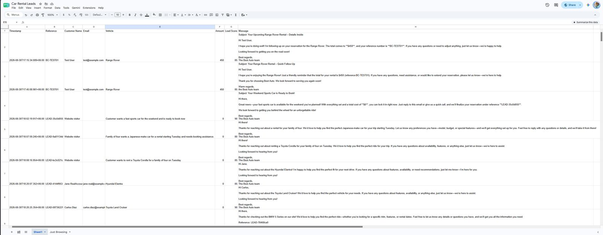

Every number on the admin dashboard reads from a live database. None of it is sample data.
A car rental platform built for a Web Designer/Web Developer + AI Automation technical assessment - a frictionless booking flow, a live operational dashboard for staff, role-gated admin access, and a chat assistant grounded in real inventory that feeds a working n8n lead automation, all running against one real Supabase database.
A rental site has three different people to satisfy, and each one breaks it in a different way.
The assessment asked for a customer-facing rental site, an admin dashboard, and an AI feature backed by a working automation. Framing it around who actually uses each piece, rather than a feature checklist, is what shaped the build.
- A customer deciding among rental sites won't tolerate a slow or confusing booking flow. If they can't quickly see what's available, at what price, and how to reserve it, they leave for a competitor.
- Staff need a live, current view of the fleet and bookings - not a spreadsheet. Checking a raw database to answer 'how's revenue trending' or 'which bookings need attention today' doesn't scale past a handful of people.
- A visitor with a question, not yet a decision, is the easiest lead to lose. If answering 'is a bigger car available' takes an email or a phone call, most people leave instead of asking.
One build per audience, all reading from the same database.
Friction-free booking
Searchable, filterable listings (category, price, seats, transmission, fuel), a detail page per vehicle, and a booking flow that never requires an account first - matching how people actually shop for a rental.
A dashboard staff would actually use
Live revenue against the prior period, a best-seller ranking, sales by country, a searchable bookings table with one-click status changes, and full vehicle inventory CRUD - reading from the same tables the customer site writes to.
A chat assistant grounded in real inventory
Live on every page, answering with specific real vehicles and prices pulled from the current fleet - with Gemini as an automatic fallback if the primary Groq call fails.
Silent lead scoring
Once a conversation reaches a few messages, it's scored in the background for booking likelihood, budget, and urgency, and surfaces on the dashboard ranked highest first - no one reads a transcript to find the serious buyers.
Leads land where the team already looks
An n8n workflow logs every scored lead to a Google Sheet the moment it's created, instead of asking a small sales team to adopt a new dashboard habit.
Access checked on every request, not just the front door
Customer and staff accounts share one login system; only a role check that runs on every request touching sensitive data - not only the dashboard page - can reach it.
What's actually live - and what's honestly still a placeholder.
The dashboard reflects what's actually happening, not a snapshot
Revenue, best-sellers, sales by country, bookings, and leads all read from the same Supabase tables the customer site writes to - there's no separate content layer to keep in sync or let go stale.
The assistant only ever names cars that exist
Every reply is generated with the live, available-vehicle list injected as the model's source of truth, and every picture-card recommendation is a real slug pulled from that same query - there's no path for it to invent a car, price, or feature.
Built and tested at phone, tablet, and desktop, not just shrunk down
Both the customer site and the admin dashboard adapt navigation, forms, and touch targets at each width - a meaningful share of visitors to a site like this are comparing options on a phone.
No real per-date availability check yet
Vehicles carry a static available flag and a stock count, not a booking-conflict engine - two customers could request the same car for overlapping dates and both would land as pending for an admin to resolve manually. Flagged in the project's own write-up as the top next step, not discovered after the fact.
The customer site, the admin dashboard, and the automation it feeds.







